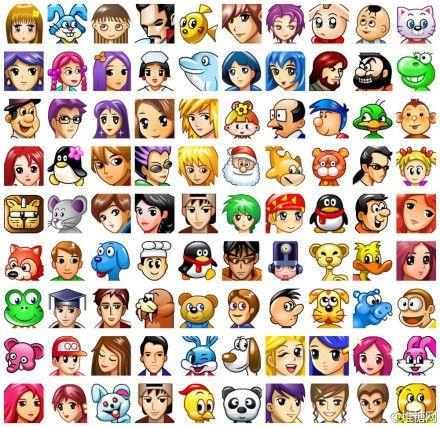

关于我

{
"nickName": "吴凯",
"gender": "男",
"motto": "在代码中发现乐趣, 在开源中寻找价值",
"email": "2963175351@qq.com",
"onlineTime": "9:00-21:00",
"interests": [
"Web开发","开源项目"
"数据分析","技术分享"
],
"skills": {
"frontend": ["HTML", "CSS", "JavaScript"],
"backend": ["Node.js", "Python"],
"other": ["Git", "Docker"]
}
}
👨💻 关于我
作为一个典型的00后，我搭建这个博客的初衷其实很简单：记录学习、生活、工作及技术笔记。至于为什么选择 .top 的域名？因为“kaihub.top”既方便记忆，又能给我一种“这网址绝对比别人好”的自信！KaiHub这个名字的由来，其实也挺有意思，Kai 是我名字中的一部分，通常有“开启”、“开辟”的含义。你可以理解为，我在这片博客的海洋中“开辟”了属于自己的小天地，也代表着我无所畏惧，敢于“开启”新世界的勇气。
至于“Hub”，那可是科技圈、社交圈中高大上的词汇！它意味着“中心”、“枢纽”，你可以把我的博客看作是一个科技与创意的聚集地，类似于“创新中心”或“信息枢纽”，总之是非常高大上的存在。也许将来，这里会成为全球编程大师的“指点江山”的地方，大家一起来围观我的成就！
我相信，KaiHub这个名字不仅仅代表着一个博客的名字，更象征着我不断探索的精神和创意的碰撞。我希望它能成为一个分享知识、技术、生活的小平台，给你带来一点灵感，哪怕只是一个小小的笑容。哦对了，搞不好哪天你会发现，这个博客居然也可以自带魔法，轻松解决你程序里的“BUG”！
🛠 技术栈
本人精通KAi、Fw、Br、Ae、Pr、Id、Ps、金蝶用友、Office等软件的安装与卸载，每次卸载速度堪比闪电，安装过程简直可以比作开挂。HTML5、CSS、JavaScript、PHP、C、C++、C#、Java、Ruby、Perl、Lisp、Python、Objective-C、ActionScript这些编程语言的单词拼写，简直是我日常生活的必备技能。只要给我一个笔记本，我就能轻松打出它们的完整拼写，键盘连连发光，绝对不掉链子。
熟悉Windows、Linux、MacOS、iOS、Android等系统的开关机，打开系统的速度比起大部分人开启电脑都快。我的开关机技术已经达到了“关机一分钟，开机三秒”的境界。每当别人卡住在开机界面时，我已经早早地进入了系统，享受着“我是操作系统的主宰”的荣耀。
对于KBS、OpenVPN、VM、VPS、内网穿透这些技术关键词，我了解的程度已经可以闭着眼睛给你讲解一遍。需要使用VPN翻墙？我随手一设，轻松做到跨越任何墙壁。内网穿透？那是我为自己打通信息高速公路的日常操作。爬虫技术？你能想到的网页元素，都在我爬虫的覆盖范围内。
总的来说，我的技术栈几乎是能让任何软件、系统和网络屈服于我的强大技能的存在，唯一的缺点就是我对设备重启的频率有点高。每当系统出问题，我总是习惯性地“试试重启”，这成了我的“秘密武器”。
🌱 成长历程
从小，我就有一个梦想，那就是搭建一个属于自己的网站。这个梦想一直伴随我成长，直到今天终于实现了。我的兴趣爱好变化多端，小时候我热爱打乒乓球，但很快我转向了更具挑战性的游戏世界。从2011年起，我沉迷于《红色警戒》、《CS》、《QQ》等游戏，度过了整个童年。游戏让我接触到了更多的电脑技术，也激发了我对计算机的兴趣。
进入初中后，我的娱乐生活更加丰富了。玩过QQ农场、抢车位、DNF、CF等经典网络游戏，并且勇敢地挑战了翻墙技术，成功访问了谷歌网站。尽管一度因为沉迷于游戏，差点影响到初三的毕业考试，但这些经历让我更深刻地意识到，生活不仅仅是学习和考试，还有许多未知的世界值得探索。
那个时候，我还加入了一个小圈子，大家一起刷腾讯QQ钻（包括手机钻、宽带钻和永久钻），不惜一切代价，只为“秀”出自己的成就。这段时光虽然充满了挑战与冒险，但也为我日后走向计算机世界奠定了基础。记得那时，我们还会把一些游戏的截图晒到QQ空间，现在回想起来，总觉得充满了青春的气息。
进入高中后，我的兴趣逐渐转向了编程和科技。那时，我开始学习一些基础的编程语言，特别是Python，并尝试自己做一些小项目。这是我与计算机科技的第一次深度接触，也让我更加坚定了以后要从事与计算机相关的职业。在高中阶段，我不仅在学术上有了一些突破，还组织过一些编程比赛和科技小组，尝试把学到的知识应用到实践中。
高中时期，我也积极参与了校园的各类活动，特别是在计算机和科技类的俱乐部中，担任了几个重要的职务。这些经历让我学到了如何团队合作，如何协调不同的任务，如何在技术项目中担任领导角色。这些宝贵的经验，至今都对我的成长起到了重要作用。

很棒的内容！
期待更多更新！
自由的气息
彩虹里面的人!